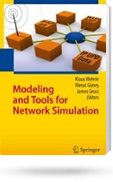

Klaus Wehrle, Mesut Günes, James Gross (Editors), Springer, 2010.

This book focuses on tools, modeling principles and state-of-the art models for discrete event simulation of communication networks, with an emphasis on wireless simulations.
Chapter 3 of the book, written by OMNeT++/OMNEST author Andras Varga, presents a high-level overview and rationale of the concepts, techniques and tools present in the OMNeT++ simulation environment. Since OMNEST is essentially the same codebase as OMNeT++, all text applies to OMNEST as well.
The wireless section of the book covers all essential modeling principles for dealing with physical layer, link layer and wireless channel behavior, and presents detailed models for IEEE 802.11, IEEE 802.16 and other systems. Further chapters cover classical modeling approaches for higher layers (network layer, transport layer and application layer) and modeling approaches for peer-to-peer networks and topologies of networks. The book briefly covers OMNeT++ simulation frameworks like MiXiM and INET, as well.
Amazon lets you view the first few chapters, the table of contents and the index under the "Look Inside" function.
(Note that the book's length is misprinted on the above sites -- it is actually 500+ pages not 256.)